PerturbSeq.RmdBulk reference + single-cell (Perturb-seq) query;
Leveraging detailed T cell state annotation in bulk reference.
Evaluate contribution of perturbation of individual genes to T cell state development.
CRISPR screens are high-throughput techniques to systematically manipulate genes across the genome and observe the resulting phenotypes. CRISPR activation (CRISPRa) and CRISPR interference (CRISPRi) are two commonly used types of CRISPR screens, with CRISPRa enhancing the expression of target genes and CRISPRi blocking it. Combining CRISPR screens and scRNA-seq, perturb-seq provides a powerful tool for comprehensively evaluate the influence of CRISPR gene perturbations on cell states.
In this case study, we applied PhiSpace to a CRISPRa Perturb-seq dataset from primary human T cells, where over 70 genes were enhanced by CRISPRa. We leveraged a bulk reference atlas containing detailed annotations of T cell states to disentangle how individual gene perturbations influenced the development of T cell states in the Perturb-seq data.
We used - Reference bulk RNA-seq: Human immune bulk RNA-seq data from DICE (Detabase of Immune Cell Expression) - Query scRNA-seq (Perturb-seq): Schmidt et al. (2022)
Load the packages.
# Install latest version of PhiSpace from github
# suppressMessages(devtools::install_github("jiadongm/PhiSpace/pkg"))
# Load packages and predefined quantities
suppressPackageStartupMessages(library(PhiSpace))
suppressPackageStartupMessages(library(ggplot2))
suppressPackageStartupMessages(library(dplyr))
suppressPackageStartupMessages(library(tidyr))
suppressPackageStartupMessages(library(magrittr))
suppressPackageStartupMessages(library(ggpubr))
suppressPackageStartupMessages(library(qs)) # quick read and write of R objects
suppressPackageStartupMessages(library(ComplexHeatmap))
suppressPackageStartupMessages(library(seriation))
dat_dir <- "~/Dropbox/Research_projects/PhiSpace/VignetteData/Perturb-seq/"
source("~/Dropbox/Research_projects/PhiSpace/VignetteData/Perturb-seq/utils.R")Download the processed and query dataset sceStim.qs.
The DICE bulk reference data can be downloaded via the
celldex package. The sce object from celldex
contains only one assay named logcounts, which contains log
transformed TPM (transcript per million) normalised counts. As raw
counts are not available, we transform logcounts back to
TPM and apply scran normalisation to TPM.
refPath <- paste0(dat_dir, "data/ref_sce.qs")
if(!file.exists(refPath)){
# BiocManager::install("celldex")
reference <- celldex::DatabaseImmuneCellExpressionData()
# There are duplicated sample names
newSampNames <- paste(colnames(reference), 1:ncol(reference), sep = "_")
colnames(reference) <- newSampNames
# Original 'logcounts' were log2(TPM + 1)
assay(reference, "TPM") <- 2^(assay(reference, "logcounts")) - 1
reference <- SingleCellExperiment(list(TPM = assay(reference, "TPM")), colData = colData(reference))
reference <- scranTransf(reference, "TPM")
qsave(reference, refPath)
} else {
reference <- qread(refPath)
}
PhiResPath <- paste0(dat_dir, "output/PhiRes.qs")
if(!file.exists(PhiResPath)){
PhiAssay <- "logcounts"
PhiRes <- PhiSpaceR_1ref(
reference, query, phenotypes = "label.fine",
PhiSpaceAssay = PhiAssay, regMethod = "PLS", nfeat = 500
)
qsave(PhiRes, PhiResPath)
} else {
PhiRes <- qread(PhiResPath)
}
length(PhiRes$selectedFeat)## [1] 2821
reducedDim(query, "PhiSpace") <- normPhiScores(PhiRes$PhiSpaceScore)Some cell types in the reference are not T cells. Keep only T cell types for better interpretation.
cTypeRemove <- c("B cells, naive", "Monocytes, CD14+", "Monocytes, CD16+", "NK cells")
cTypeKeep <- setdiff(colnames(reducedDim(query, "PhiSpace")), cTypeRemove)
reducedDim(query, "reducedPhiSpace") <- reducedDim(query, "PhiSpace")[,cTypeKeep]First we look at how PhiSpace scores match the original cell cluster annotation by plotting a heatmap. Columns of the heatmap represent cell types defined in the reference, and rows are cell clusters defined by Schmidt et al. (2022). The first thing we notice is that the largest PhiSpace score is around 0.5 (figure legend), which suggests that the T cells tended to have uncertain cell types compared to the reference bulk samples. This is reasonable as most of these cells were CRISPR perturbed.
ht_opt$message = FALSE
queryLvls <- c("1: IFNG High 1", "2: Negative Regulators", "3: Th2", "4: IL22 High",
"5: Proliferative (S)", "6: Proliferative (G2/M)", "7: TNF Locus High",
"8: GNLY High", "9: CCL3/4 High, IFNG Low", "10: CD8 Common",
"11: EMP1 Guides", "12: IFNG High 2", "13: IL2 High 1",
"14: CD4 Common", "15: IL2 High 2")
plotPhiSpaceHeatMap(
reducedDim(query, "reducedPhiSpace"),
queryLabs = query$cluster_name,
name = "PhiScore", queryLvls = queryLvls
)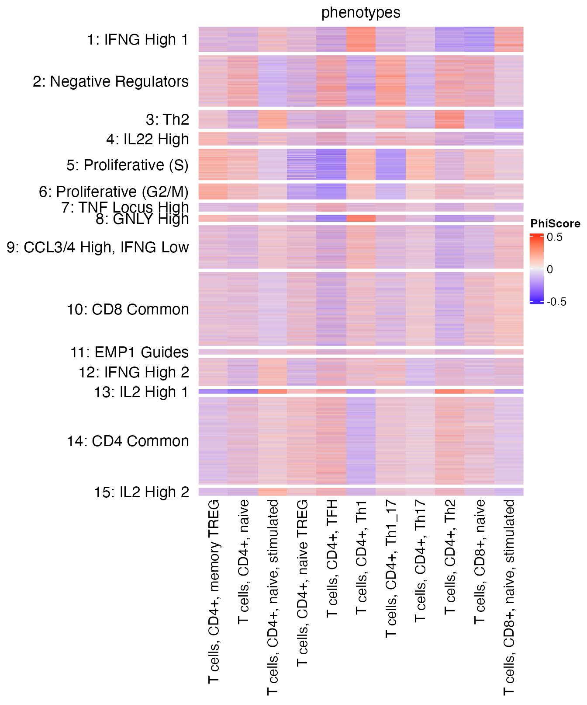
CD4 and CD8 are two of the major T cell populations. Schmidt et al. (2022) looked at the presence of CD4 and CD8 T cells in their dataset by using a CD4/CD8 score, taking both positive and negative values: the higher (lower) the score, the more CD4-(CD8-)like a cell is; the closer the score to 0, the more ambiguous.
From our PhiSpace scores we define a new CD4/CD8 score as follows. Since there are multiple CD4 and CD8 subtypes defined in the reference, we first define the CD4 (CD8) score as the average PhiSpace scores of all CD4 (CD8) subtypes. Then the new CD4/CD8 score is defined as the cube root transformation of CD4 score - CD8 score. The new CD4/CD8 score has the same meaning as the one defined by Schmidt et al. (2022).
The two scores gave very similar visualisation (UMAP) as the original. Both implied that cells towards the top left (bottom right) corners were more CD4-(CD8-)like.
# Original CD4/CD8 score
matrixPlot(reducedDim(query, "umap_original"), comp_idx = 1:2, colBy = query$CD4.CD8.Score)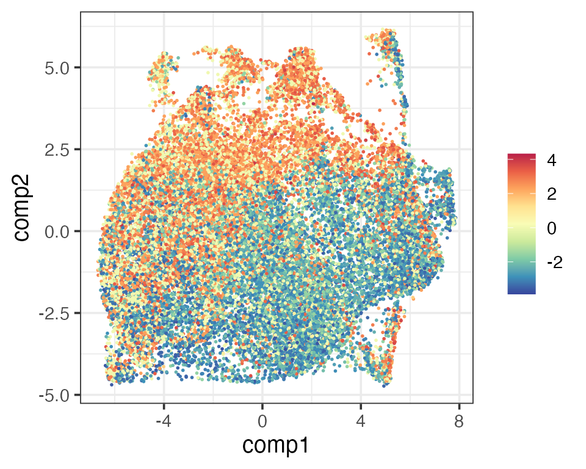
# New CD4/CD8 score
allCellTypes <- colnames(reducedDim(query, "PhiSpace"))
CD4Types <- allCellTypes[grepl("CD4", allCellTypes)]
CD8Types <- allCellTypes[grepl("CD8", allCellTypes)]
scCD4 <- rowMeans(reducedDim(query, "PhiSpace")[,CD4Types])
scCD8 <- rowMeans(reducedDim(query, "PhiSpace")[,CD8Types])
matrixPlot(reducedDim(query, "umap_original"), comp_idx = 1:2, colBy = scCD4)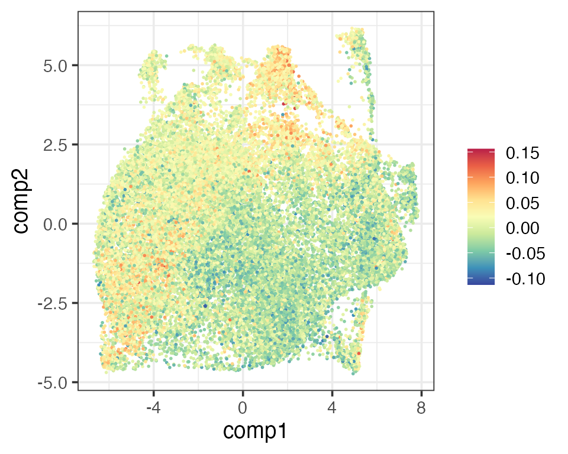
matrixPlot(reducedDim(query, "umap_original"), comp_idx = 1:2, colBy = scCD8)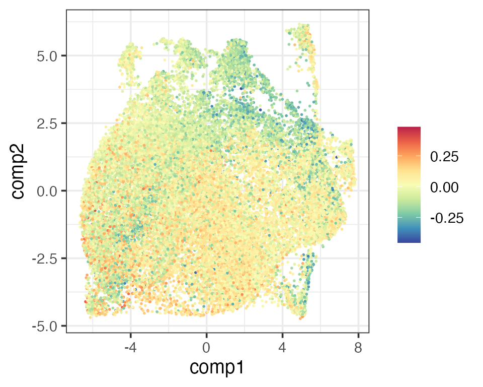
newCD4Score <- sign(scCD4 - scCD8) * abs(scCD4 - scCD8)^(1/3)
matrixPlot(reducedDim(query, "umap_original"), comp_idx = 1:2, colBy = newCD4Score)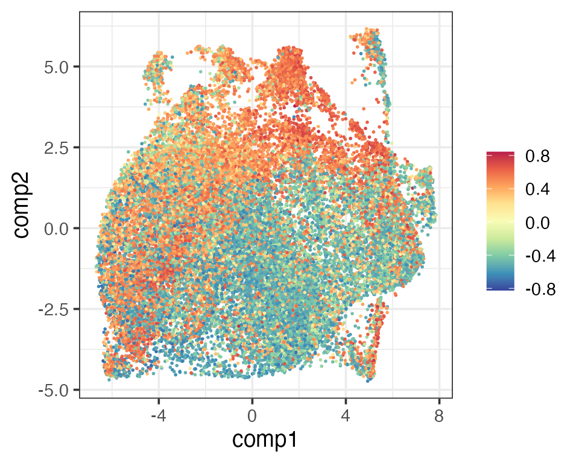
The next thing Schmidt et al. (2022) looked at was how activated the T cells were. They defined an activation score using T cell activation markers. Since we have two activated T cell types (activated CD4 and CD8) in the reference, we simply define a new activation score as the cube root transform of the sum of activated CD4 and CD8 scores. Again, these two activation scores gave similar visualisation.
matrixPlot(reducedDim(query, "umap_original"), comp_idx = 1:2, colBy = query$activation.score)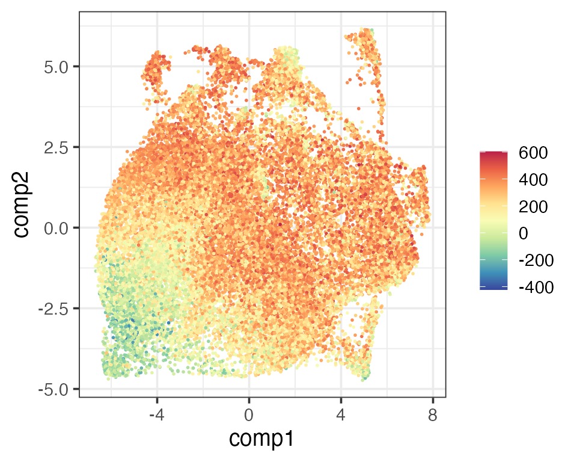
scActCD4 <- reducedDim(query, "PhiSpace")[,"T cells, CD4+, naive, stimulated"]
scActCD8 <- reducedDim(query, "PhiSpace")[,"T cells, CD8+, naive, stimulated"]
scAct <- scActCD4 + scActCD8
matrixPlot(reducedDim(query, "umap_original"), comp_idx = 1:2, colBy = scAct)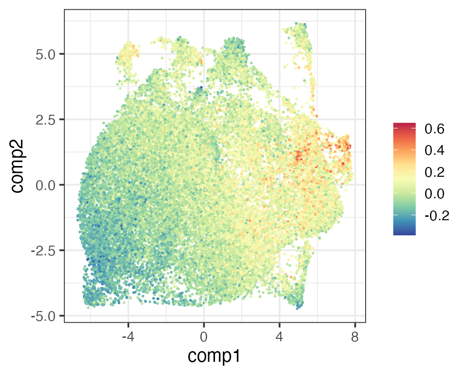
An important question in Schmidt et al. (2022) is how individual CRISPRa perturbations (enhancing gene activities) contribute to T cell activation. They plotted the T cell activation scores grouped by individual perturbed genes. Among those perturbed genes, some were expected to be nagative regulators, i.e. contributing negatively to T cell activations. Since some cells were not perturbed at all, they were used as control group and hypothesis testing was used to see if an individual perturbation significantly promoted or suppressed activation (p values Bonferroni corrected).
We plotted boxplots for both versions of activation scores. Both results highlighted some key genes mostly strongly promoted or suppressed activation, e.g. VAV1 and CD28 (promoting), MUC1 and MAP4K1 (suppressing). However, in our result all negative regulators were found significantly suppressing activation, whereas in Schmidt et al. (2025) one negative regulator (IKZF3) was not found significant. We also found more significant positive regulators than Schmidt et al. (2025).
ctrlReg <- c("NO-TARGET")
# Define positive and negative regulators according to Schmidt et al. (2022)
negReg <- c(
"IKZF3", "CEACAM1", "FOXL2NB", "ARHGDIB", "ITPKA", "JMJD1C", "GRAP", "INPPL1",
"SLA2", "LAT2", "MAP4K1", "MUC1", "GATA3"
)
perturbActPlot <- function(scAct, xcoord){
plot_df <- data.frame(sc = scAct, target = as.character(query$gene))
pvals_adj <- tempPvals(scAct)$pvals
pvals_ast <- data.frame(pvals_adj = pvals_adj) %>%
mutate(
signif = case_when(
pvals_adj < 0.001 ~ "***",
pvals_adj < 0.01 ~ "**",
pvals_adj < 0.05 ~ "*",
TRUE ~ ""
)
)
pvals_ast$target <- rownames(pvals_ast)
types <- rep("Positive Regulator", nrow(plot_df))
types[plot_df$target %in% negReg] <- "Negative Regulator"
types[plot_df$target %in% ctrlReg] <- "Control"
plot_df$types <- types
targetMed <- plot_df %>% group_by(target) %>% summarise(med = median(sc)) %>% arrange(med)
plot_df$targetOrdered <- factor(plot_df$target, levels = targetMed$target)
pvals_ast$target <- factor(pvals_ast$target, levels = targetMed$target)
medCtrl <- targetMed$med[targetMed$target == "NO-TARGET"]
typeCols <- c("Control" = "gray", "Positive Regulator" = "red", "Negative Regulator" = "blue")
plot_df %>% ggplot(aes(sc, targetOrdered)) +
geom_boxplot(aes(fill = types), outliers = F, linewidth = 0.25) +
scale_fill_manual(values = typeCols) + theme_bw(base_size = 12) +
theme(axis.title = element_blank()) +
geom_text(data = pvals_ast, aes(xcoord, target, label = signif), size = 4) +
geom_vline(aes(xintercept = medCtrl), linetype = 2)
}
scAct <- query$activation.score %>% `names<-`(colnames(query))
perturbActPlot(scAct, 650) + ggtitle("Activation scores (Schmidt et al., 2022) by perturbed genes")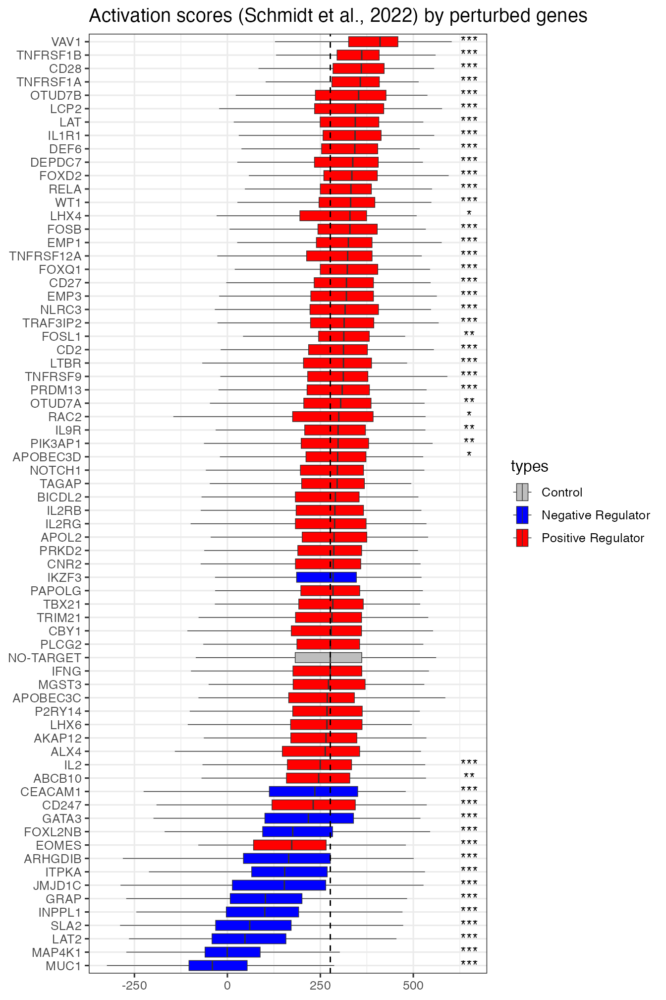
scAct <- scActCD4 + scActCD8
perturbActPlot(scAct, 0.6) + ggtitle("Activation scores (PhiSpace) by perturbed genes")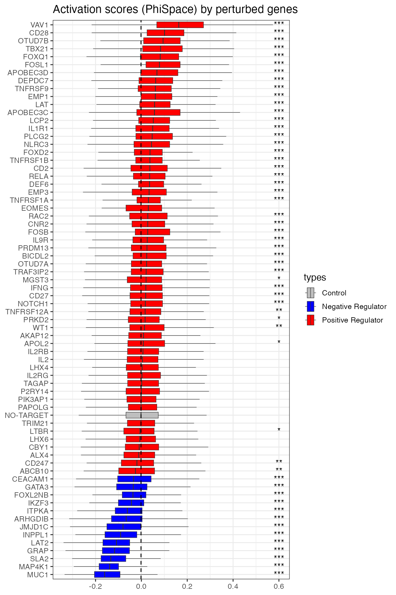
In addition to recapitulate what was found by Schmidt et al. (2022), PhiSpace provides flexibility for more analyses on how perturbations affects T cell states. We can group any cell type scores by perturbed genes, thus assessing how these perturbations affected T cell states. For example, boxes plots for Th1 and Th2 (T helper 1 and T helper 2) scores highlighted TBX21 and GATA3, which were known as key genes in the Th1 and Th2 cell fates (role of TBX21 and role of GATA3).
colnames(reducedDim(query, "reducedPhiSpace"))## [1] "T cells, CD4+, memory TREG" "T cells, CD4+, naive"
## [3] "T cells, CD4+, naive, stimulated" "T cells, CD4+, naive TREG"
## [5] "T cells, CD4+, TFH" "T cells, CD4+, Th1"
## [7] "T cells, CD4+, Th1_17" "T cells, CD4+, Th17"
## [9] "T cells, CD4+, Th2" "T cells, CD8+, naive"
## [11] "T cells, CD8+, naive, stimulated"
tempcTypeBoxplot <- function(cType){
sc <- reducedDim(query, "PhiSpace")[,cType]
pvals_adj <- tempPvals(sc)$pvals_adj
pvals_ast <- data.frame(pvals_adj = pvals_adj) %>%
mutate(
signif = case_when(
pvals_adj < 0.001 ~ "***",
pvals_adj < 0.01 ~ "**",
pvals_adj < 0.05 ~ "*",
TRUE ~ ""
)
)
pvals_ast$target <- rownames(pvals_ast)
plot_df <- data.frame(sc = sc, target = query$gene)
plot_df$cellID <- rownames(plot_df)
targetMed <- plot_df %>% group_by(target) %>% summarise(med = median(sc)) %>% arrange(med)
plot_df$targetOrdered <- factor(plot_df$target, levels = targetMed$target)
plot_df <- merge(plot_df, targetMed, by = "target")
pvals_ast$target <- factor(pvals_ast$target, levels = targetMed$target)
medCtrl <- targetMed$med[targetMed$target == "NO-TARGET"]
p <- plot_df %>% ggplot(aes(sc, targetOrdered)) +
geom_boxplot(aes(fill = med), outliers = F, linewidth = 0.25) + theme_bw(base_size = 12) +
theme(axis.title = element_blank(), legend.position = "none") + geom_text(
data = pvals_ast, aes(quantile(sc,0.999), target, label = signif), size = 3
) + scale_fill_gradient2(low = "blue", mid = "white", high = "red") + geom_vline(
aes(xintercept = medCtrl), linetype = 2
)
p
}
tempcTypeBoxplot("T cells, CD4+, Th1")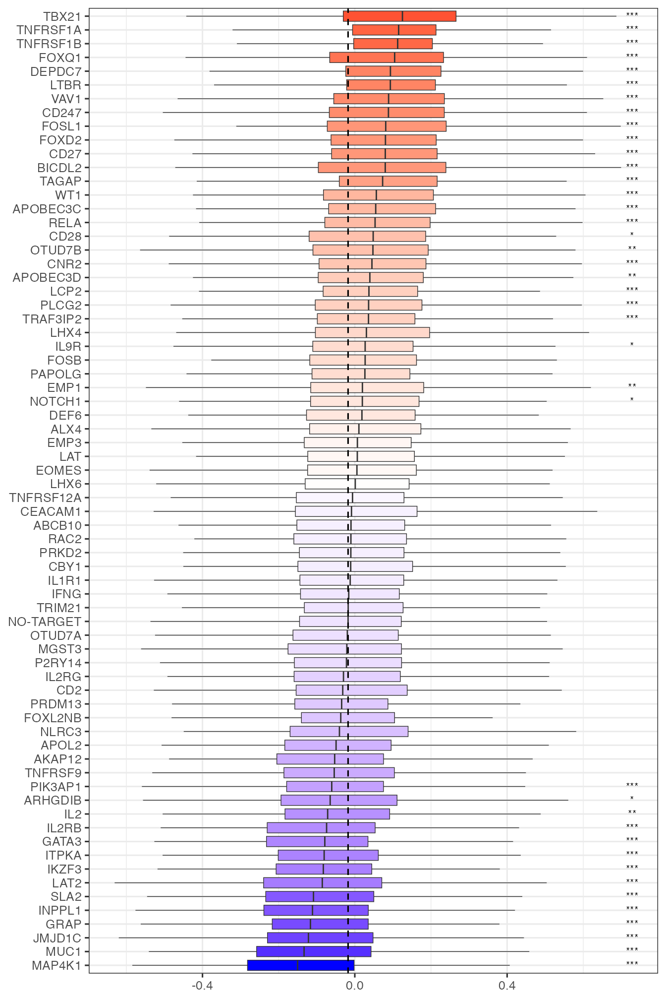
tempcTypeBoxplot("T cells, CD4+, Th2")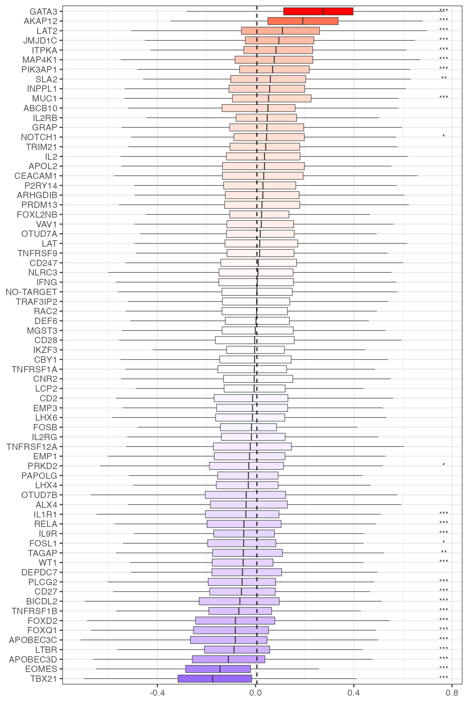